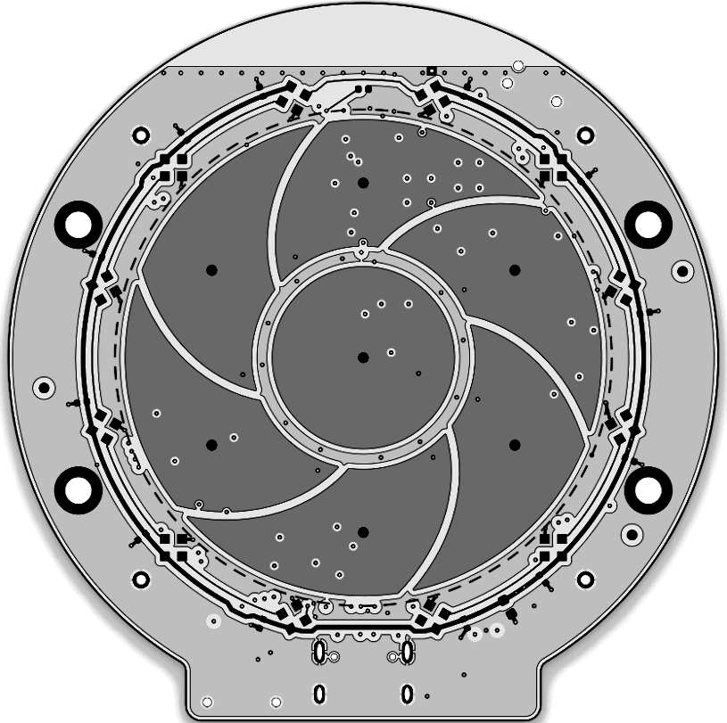
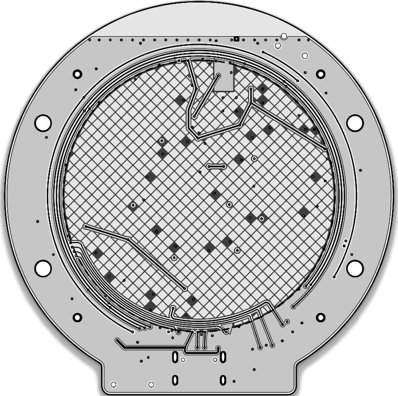
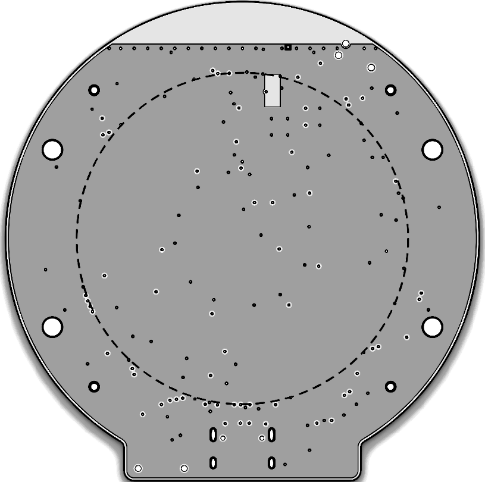
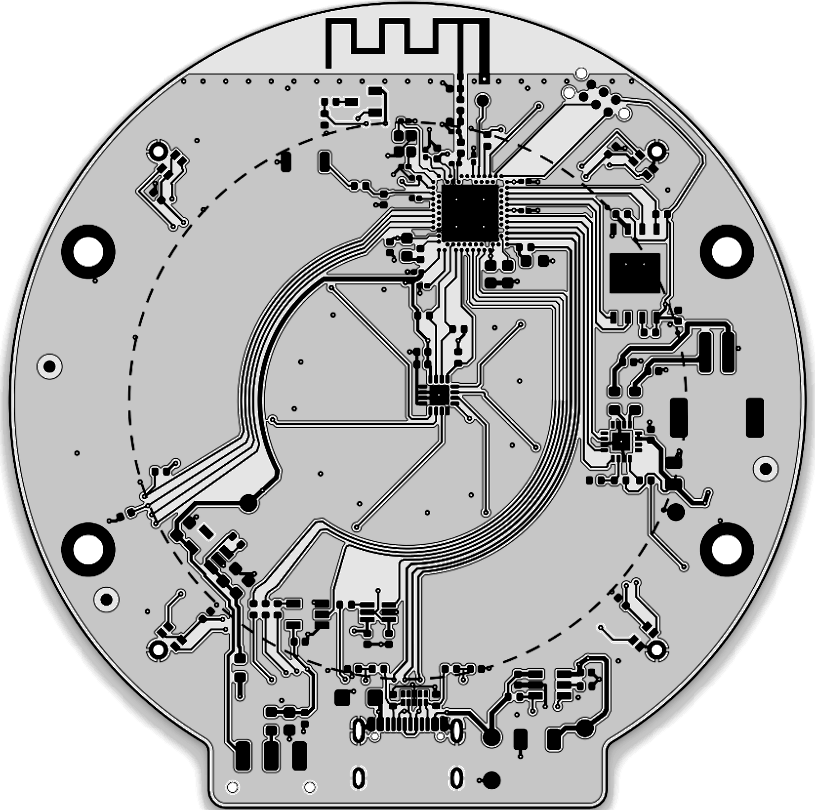

Una IA diseñóestos tres aparatos.
Imágenes: Anthropic / Diode Computers
Funcionaronsin corregirel circuito.
Todo empezócon una frase.




Diseñó la placacompleta:cuatro capas de cobre.
Imágenes: Anthropic / Diode Computers
Si algo no salía,lo borraba yempezaba de nuevo.
Imágenes: Anthropic / Diode Computers
En la prueba de Diode,casi triplicó almodelo anterior.
Modelo anterior (Fable 5)
25%
Notó que la placasolo entra inclinadaunos 25°.
Siguen siendoprototipos:sin certificar yarmados porhumanos.
Tres aparatos.Una frase.Funcionaron.
Fuente: Anthropic × Diode Computers, 9 nov 2026.
El artículo completo está en anthropic.com/research